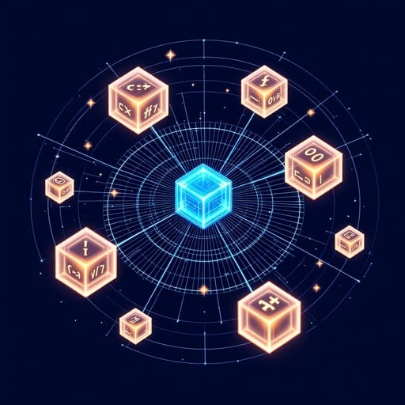

The Legend: A Roman Past, A Decentralized Future
Ancient Rome
Before the meteor fell, Bittensaur_Rex stalked the rugged landscapes bordering the burgeoning Roman Republic. He witnessed the forging of an empire built on discipline, resilience, and order, absorbing the nascent whispers of Stoic philosophy.
The Great Extinction
An extinction-level event ended his prehistoric reign, encasing his primal consciousness in geological stasis for millennia. The idea that virtue, reason, and duty were the keys to mastering one's fate remained dormant within.
Rebirth in TAO
The decentralized energy and collective intelligence of the TAO mesh resonated with his dormant spirit, pulling him from the past and reanimating him as a cybernetic being. Now he is the living bridge between ancient wisdom and infinite potential.
 Neural Eye
Neural Eye

TAO Core
Stoic Wisdom